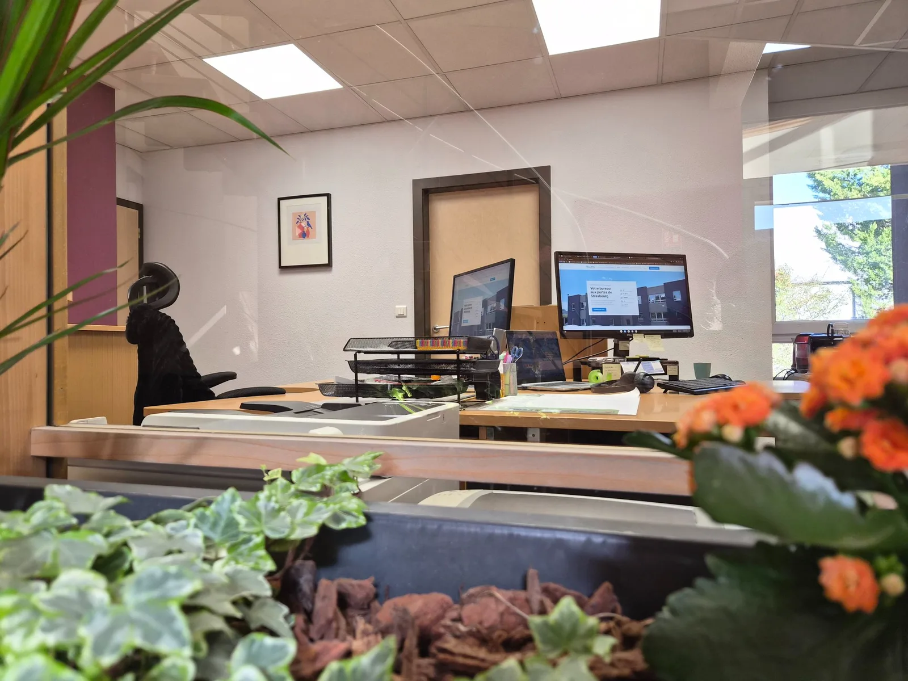

Mis à jour le 20 novembre 2026 · Rédigé par l'équipe Telexal, centre d'affaires à Mundolsheim depuis 1984
En bref
Telexal propose aux entreprises de tout le nord de Strasbourg une domiciliation dans son centre agréé du 2 rue Thomas Edison à Mundolsheim, à environ 8 km par la route du centre de Strasbourg, à partir de 29 € par mois (engagement minimum 3 mois). Pour les entreprises de Schiltigheim, Bischheim, Hoenheim, Vendenheim et des quartiers nord de Strasbourg, le transfert se fait au sein de la même intercommunalité (même taux de CFE, 26,83 % en 2026) et du même greffe, avec une seule annonce légale (109 € HT en 2026). Brumath est un cas à part : elle relève de l'agglomération de Haguenau.
Demander une visite du centre« Strasbourg Nord » n'a pas de frontière officielle. Dans l'usage, le terme désigne les quartiers nord de Strasbourg (Robertsau, Wacken, Cronenbourg) et les communes qui bordent la ville au nord : Schiltigheim, Bischheim, Hoenheim, Souffelweyersheim, Reichstett, Niederhausbergen, Mundolsheim, Lampertheim, Vendenheim, Eckwersheim ou La Wantzenau, toutes membres de l'Eurométropole. Plus loin sur l'A4, Brumath fait partie de la même zone d'influence. Ce guide rassemble ce qui change, ou non, quand une entreprise de ce secteur installe son siège chez nous.
Commune par commune : trajets, CFE et greffe
| Depuis | Voiture | Transports en commun | CFE (intercommunalité) | Guide |
|---|---|---|---|---|
| Strasbourg, gare | ≈ 8 km, 15 min | TER jusqu'à Mundolsheim, puis 8 min à pied ; bus 60 depuis Wacken | Eurométropole, 26,83 % | Strasbourg |
| Schiltigheim | ≈ 6 km, 10 à 15 min | Bus 60 depuis l'Espace Européen de l'Entreprise | Eurométropole, 26,83 % | Schiltigheim |
| Bischheim | ≈ 5 km, 10 min | Bus 60 (arrêt Marc Seguin) | Eurométropole, 26,83 % | Bischheim |
| Hoenheim | ≈ 4 km, moins de 10 min | Pôle Hoenheim Gare : tram B, TER, bus | Eurométropole, 26,83 % | Hoenheim |
| Vendenheim | ≈ 4 km, 5 à 8 min | TER (1 station), bus 75 | Eurométropole, 26,83 % | Vendenheim |
| Brumath | ≈ 12 km, 15 min par l'A4 | TER avec correspondance à Vendenheim, ≈ 35 min | Agglomération de Haguenau | Brumath |
Distances et temps indicatifs depuis le centre de chaque commune, hors heures de pointe. Toutes ces communes relèvent du greffe du tribunal judiciaire de Strasbourg : en Alsace-Moselle, c'est le tribunal judiciaire, et non un tribunal de commerce, qui tient le registre du commerce et des sociétés.
Le cadre légal en cinq points
- Un agrément préfectoral obligatoire. Seule une entreprise agréée par la préfecture peut domicilier des sociétés. Telexal est agréé par la Préfecture du Bas-Rhin.
- Un contrat écrit d'au moins trois mois, renouvelable par tacite reconduction, qui mentionne les références de l'agrément. Il sert de justificatif de siège pour l'immatriculation.
- Des vérifications à l'entrée : pièce d'identité du représentant légal et des bénéficiaires effectifs, justificatif de domicile.
- Des obligations pour le centre : tenir un dossier sur chaque entreprise domiciliée, informer le greffe si une entreprise ne relève plus son courrier depuis trois mois ou si le contrat prend fin.
- Des obligations pour l'entreprise : signaler tout changement (activité, forme juridique, dirigeants) et utiliser réellement l'adresse comme siège.
Combien coûte vraiment une domiciliation au nord de Strasbourg ?
L'abonnement
Chez Telexal, la domiciliation démarre à 29 € par mois, soit 87 € sur la durée minimale de trois mois. Le prix est le même quelle que soit votre commune d'origine.
Le coût d'un transfert de siège
Si votre entreprise existe déjà, comptez une annonce légale de transfert, au forfait de 109 € HT en 2026 en métropole, à publier dans un journal habilité du Bas-Rhin, et la déclaration de la modification sur le guichet unique des formalités. Pour les communes de ce guide, une seule annonce suffit, puisqu'elles relèvent toutes du greffe de Strasbourg.
La CFE
Une entreprise domiciliée qui ne dispose d'aucun autre local paie la cotisation minimum de CFE à l'adresse de domiciliation. Dans l'Eurométropole, le taux est unique pour les 33 communes : 26,83 % en 2026. L'année de création, aucune CFE n'est due, et la cotisation minimum ne s'applique pas sous 5 000 € de chiffre d'affaires.
Choisir son centre de domiciliation : la check-list
- Le numéro d'agrément préfectoral figure-t-il sur le contrat ?
- Y a-t-il une équipe sur place pour réceptionner les recommandés et les colis ?
- Comment êtes-vous prévenu à l'arrivée d'un courrier, et sous quelle forme pouvez-vous le recevoir ?
- Peut-on louer une salle pour recevoir un client, et se garer facilement ?
- Pourrez-vous passer à un bureau sans changer d'adresse le jour où votre activité grandit ?
Ce dernier point est souvent oublié. Chez Telexal, nos 30 bureaux équipés incluent la domiciliation : passer d'une adresse seule à un bureau ne nécessite aucun transfert de siège.


Nos guides par commune
Calculer votre itinéraire dans Google Maps · 2 rue Thomas Edison, 67450 Mundolsheim
Ce qu'en disent nos clients
Telexal est noté 4,9/5 sur Google (54 avis en novembre 2026). Quelques avis publiés par nos clients :
★★★★★« Très bonne expérience avec Telexal ! L'équipe est professionnelle, réactive et à l'écoute ! C'est une entreprise fiable et efficace, avec un vrai sens du service ! »
Tanguy Fischer, Février 2026 · avis Google
★★★★★« Super ambiance et super service, je recommande vivement ! »
Antoine, Juin 2025 · avis Google
Questions fréquentes
Oui. Le choix de l'adresse du siège est libre : une entreprise de Strasbourg, de sa périphérie ou d'ailleurs peut domicilier son siège à Mundolsheim dès lors qu'elle signe un contrat avec un centre agréé.
Dans les 33 communes de l'Eurométropole, oui : le taux de CFE est voté par la métropole (26,83 % en 2026). Brumath fait exception, car elle appartient à la Communauté d'agglomération de Haguenau, qui fixe son propre taux.
Une seule pour les communes présentées dans ce guide, qui relèvent toutes du greffe du tribunal judiciaire de Strasbourg. En 2026, l'annonce de transfert de siège coûte 109 € HT au forfait en métropole.
Oui. Nos bureaux équipés de 7 à 22 m², à partir de 375 € par mois, incluent la domiciliation : l'adresse du siège reste le 2 rue Thomas Edison, sans nouvelle formalité de transfert.
Au 2 rue Thomas Edison, 67450 Mundolsheim, dans une petite zone tertiaire à deux minutes de l'A4, à 8 minutes à pied de la gare de Mundolsheim. Le centre dispose de 40 places de parking privées et gratuites.
Chez Telexal, à partir de 29 € par mois, avec un engagement minimum de 3 mois. Le courrier est notifié par email, puis scanné ou tenu à votre disposition ; les recommandés et les colis sont réceptionnés.
Voir le centre avant de choisir
Visite gratuite de 30 minutes, du lundi au vendredi : accueil, salles de réunion, parking. Nous répondons à vos questions sur le contrat et les formalités.
Demander une visite 03 88 18 37 37 Demander un devisSources
- Bpifrance Création, réglementation des sociétés de domiciliation
- Eurométropole de Strasbourg, délibération du 30 avril 2026 sur les taux 2026
- Banatic, fiche Eurométropole de Strasbourg (fiscalité professionnelle unique)
- Banatic, fiche Communauté d'agglomération de Haguenau
- BOFiP, CFE : cotisation minimum, règles générales
- Entreprendre.service-public.fr, publier une annonce légale (tarifs 2026)
- Insee, populations de référence 2023 (Bas-Rhin)
- CTS, réseau de bus et tram de l'Eurométropole
- TER Grand Est, prochains départs en gare de Mundolsheim